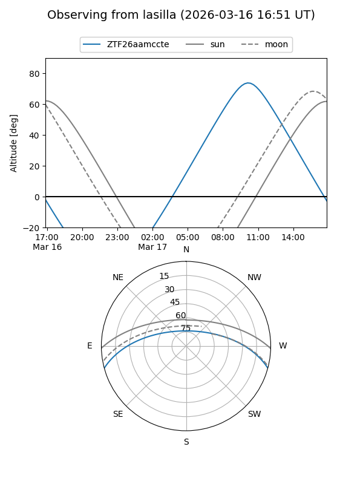
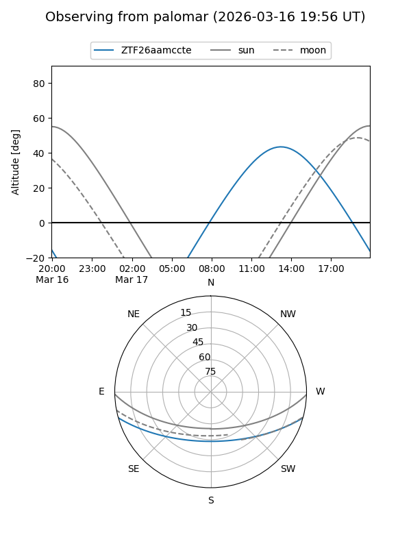

ZTF26aamccte
Target ZTF26aamccte at 2026-03-16 14:11
Aliases and brokers:
FINK: link
Lasair: link
ALeRCE: link
alt names
ZTF26aamccte (ztf,fink_ztf)
Coordinates:
equatorial (ra, dec) = 256.3178,-13.10072
equatorial (HMS+DMS) = 17:05:16.27,-13:06:02.59
galactic (l, b) = (8.2637,+16.49815)
Flags:
Photometry:
last ztfg=17.49
1 ztfg detections
Lightcurve
Visibility


Additional plots